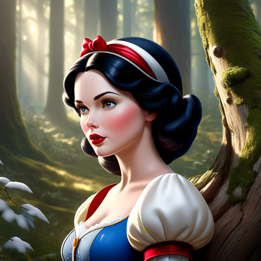

Info-
"Sneeuwwitje en de Zeven Dwergen," de eerste animatiefilm van Walt Disney uit 1937, is gebaseerd
op het Duitse sprookje van de Gebroeders Grimm. Het vertelt het verhaal van Sneeuwwitje, een prinses
met huid zo wit als sneeuw, lippen zo rood als bloed en haar zo zwart als ebbenhout.
Haar jaloerse stiefmoeder, de boze koningin, wil Sneeuwwitje uit de weg ruimen omdat ze mooier is dan zij.
Sneeuwwitje ontvlucht het kasteel en vindt onderdak bij zeven dwergen in een huisje in het bos.
De koningin gebruikt verschillende giftige middelen om Sneeuwwitje te doden, maar elk plan mislukt.
Uiteindelijk valt ze ten prooi aan een vergiftigde appel, waardoor ze in een diepe slaap valt die alleen
kan worden verbroken door de kus van ware liefde.
Een prins komt, kust Sneeuwwitje, en wekt haar tot leven. De film eindigt met een sprookjesachtig huwelijk.
Het verhaal benadrukt thema's van schoonheid, goedheid, en de triomf van liefde over het kwaad.
"Sneeuwwitje en de Zeven Dwergen" wordt beschouwd als een mijlpaal in de animatiegeschiedenis en een
tijdloos sprookje.
De film is uitgkomen in 1937 op 21 december.
Het bekenste nummer is: Fluitje van een cent
